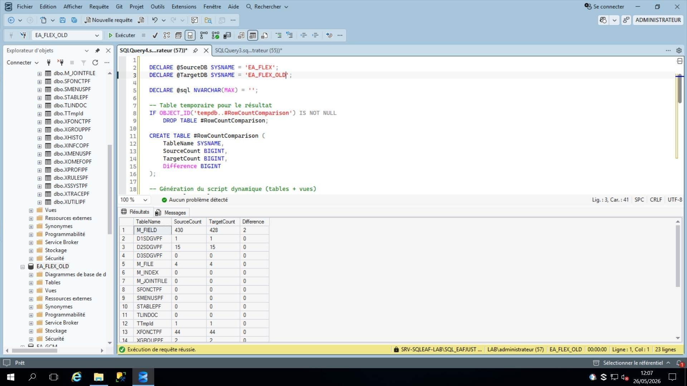
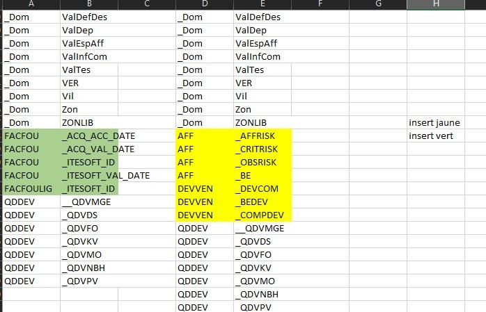
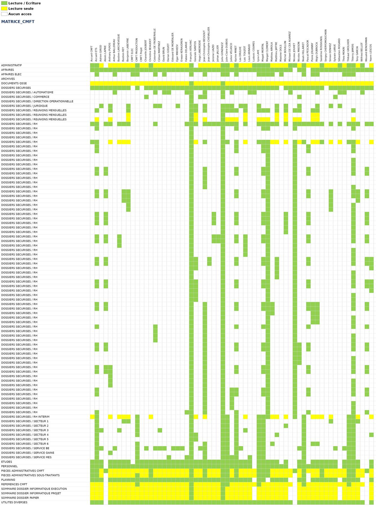

Contexte : Missions d'audit et de sécurisation réalisées au sein de la DSID du Groupe CLIMATER.
Cahier des charges : Le groupe utilise l'ERP Espace Affaire pour gérer les devis, commandes et factures. Avant de nettoyer l'environnement de test de la filiale BASC CI ELEC, l'objectif était de comparer deux bases de données (EA_FLEX et EA_FLEX_OLD) pour détecter les écarts et les corriger.
Démarche et mode opératoire :
LEFT JOIN et NOT EXISTS (notamment sur les tables M_FIELD et M_FILE).INSERT pour réintégrer les enregistrements manquants et garantir la parité des deux bases.Preuves de réalisation :

Figure 8 : Comparaison du nombre de lignes EA_FLEX / EA_FLEX_OLD (colonne « Difference »)

Figure 9 : Écarts repérés entre les deux bases, à réintégrer (en vert et en jaune)
Cahier des charges : Pour des motifs de sécurité et de conformité, la DSID devait connaître avec précision la répartition des permissions accordées sur les dossiers partagés des serveurs de fichiers pour chaque filiale du groupe.
Démarche et mode opératoire :
_RW pour Lecture/Écriture et _RD pour Lecture seule).Preuve de réalisation :

Figure 10 : Matrice des droits d'accès générée (vert = lecture/écriture, jaune = lecture seule)